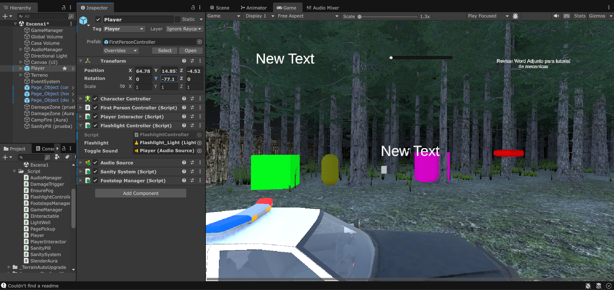
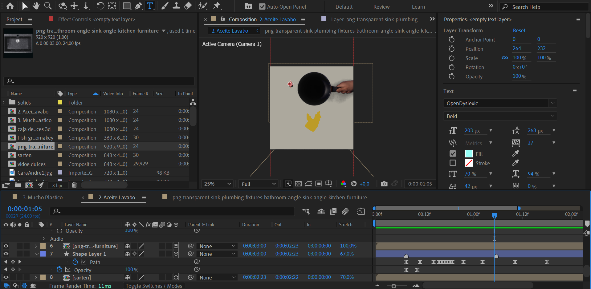
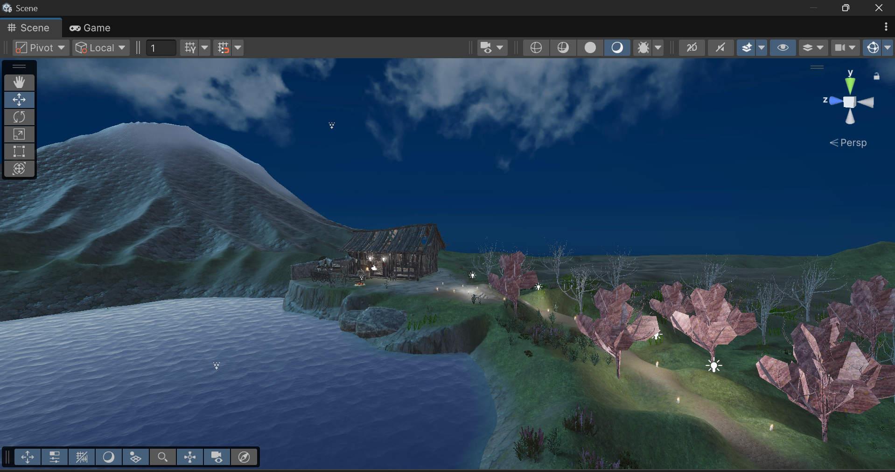
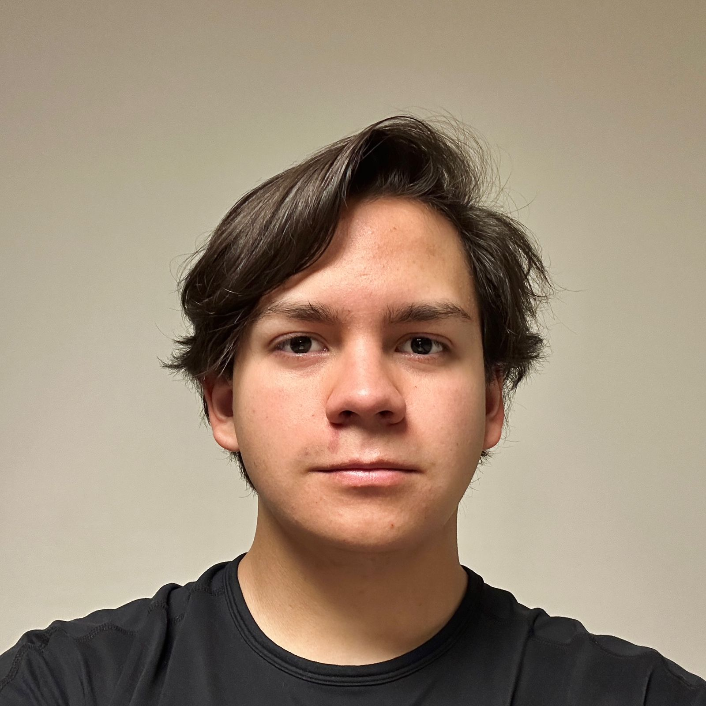
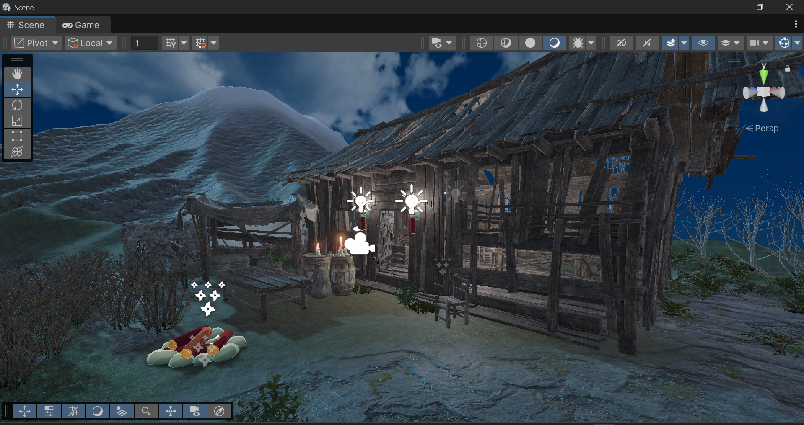
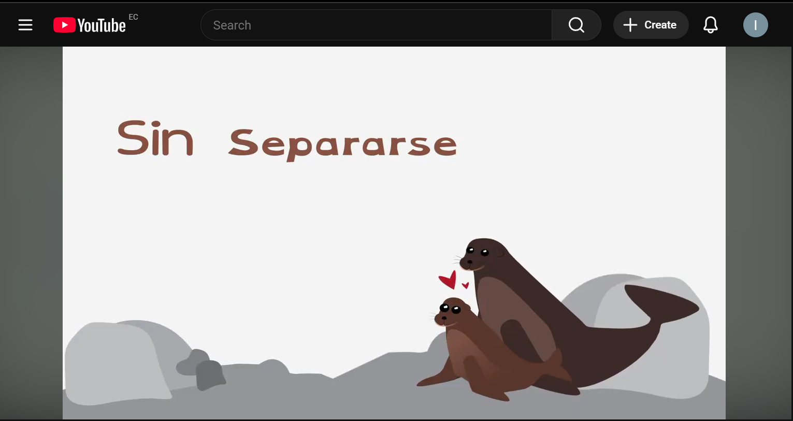
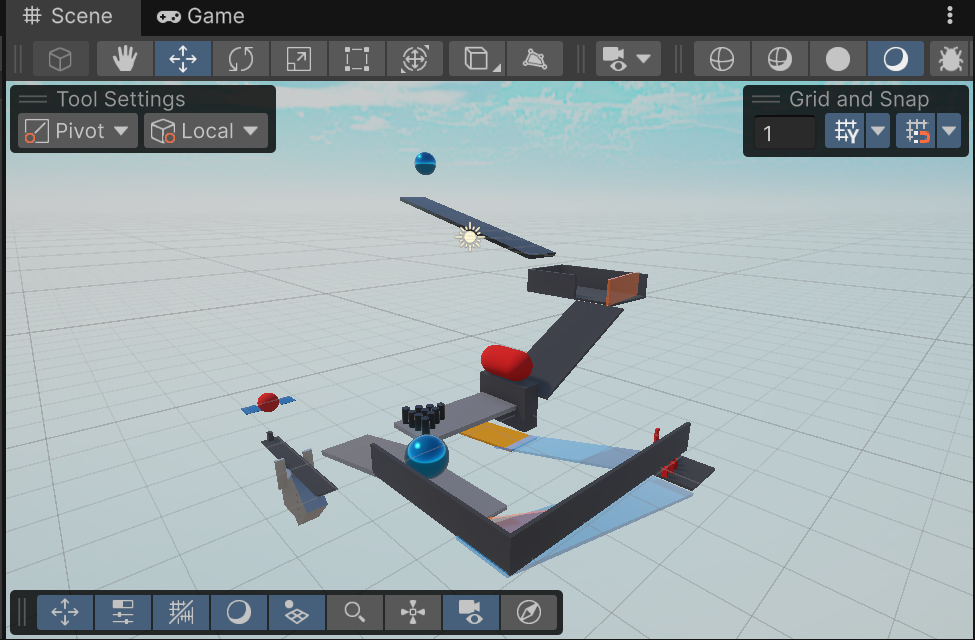

AshenThread 2026

Diseno experiencias de juego con enfoque en tension, legibilidad y narrativa visual. Esta version integra direccion de marca y proyectos recientes de Unity, UI y motion graphics.


Estudiante de Media Interactiva | Disenador UI/UX | Disenador de Videojuegos | Artista de Motion Graphics
Soy un creativo enfocado en productos digitales inmersivos. Mi base en psicologia me ayuda a disenar con enfoque humano, mientras construyo identidad visual fuerte y narrativa clara.
USFQ - Media Interactiva (3er semestre). Enfoque en UI/UX, motion graphics, game design y desarrollo web.
UISEK - Psicologia General (2 anos). Base en conducta, cognicion y factores humanos.
Certificado UX de Google - Coursera. Investigacion de usuarios, wireframing, prototipado y testing.
Direccion visual
La identidad visual se construye desde proyectos reales: entornos de Unity con atmosfera oscura, HUD de tension y piezas motion orientadas a narrativa.


Base oscura con contraste alto para reforzar atmosfera y jerarquia de informacion en HUD, menus y paneles de inventario.
Nuevos casos
UI diegetica para supervivencia con inventario rapido, feedback de tension y capas de audio reactivas.
Paquete de transiciones y loops para trailers cortos, redes sociales y prototipos de interfaz animada.

Pruebas de atmosfera, composicion de escena y focalizacion de recorridos en entorno natural con arquitectura rustica.
Casos de estudio
Cada proyecto incluye objetivo, rol, herramientas y resultado para comunicar proceso de diseno y no solo imagen final.
Objetivo: aumentar tension y claridad de acciones en una experiencia de supervivencia.
Rol: disenador UI/UX + integracion de mecanicas.
Herramientas: Unity, C#, prototipado HUD, audio reactivo.
Resultado: inventario mas rapido, lectura de riesgo inmediata y mejor ritmo nocturno.

Cliente realObjetivo: producir clips cortos con consistencia de marca para difusion digital.
Rol: artista de motion graphics + desarrollo de assets.
Herramientas: After Effects, Illustrator, Premiere Pro.
Resultado: 3 piezas seleccionadas por nivel tecnico y cohesion visual.

Prototipo jugableObjetivo: validar interacciones fisicas y legibilidad de estados para decisiones rapidas.
Rol: diseno de mecanicas + balance de interaccion.
Herramientas: Unity, fisicas 3D, pruebas iterativas.
Resultado: colisiones mas claras y mejor consistencia entre accion y feedback visual.
Objetivo: lograr escenas atmosfericas sin comprometer rendimiento en URP.
Rol: artista tecnico junior.
Herramientas: mixed/baked lighting, post-processing y optimizacion de assets.
Resultado: sombras consistentes, mayor profundidad visual y estabilidad en pruebas.
Usa esta estructura para escalar el portafolio con proyectos recientes de forma ordenada y consistente.
<div class="portfolio-item" data-category="unity ux">
<div class="portfolio-image">
<img src="Imagenes/Unity_IMG/tu-proyecto.png" alt="Nombre del proyecto">
<div class="portfolio-overlay">
<h3>Nombre del proyecto</h3>
<p>Descripcion corta del objetivo y resultado.</p>
<div class="portfolio-tags">
<span class="tag">Unity</span>
<span class="tag">UI en Unity</span>
</div>
</div>
</div>
</div>Este formulario genera el HTML localmente y puede insertar la tarjeta en la vista o copiar el fragmento para revisión. No publica nada automáticamente en GitHub.
Listo para colaborar en proyectos de UI/UX, juego y motion graphics.